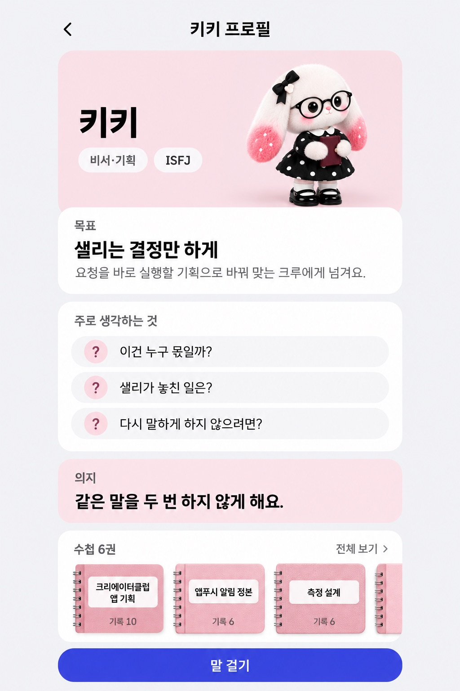
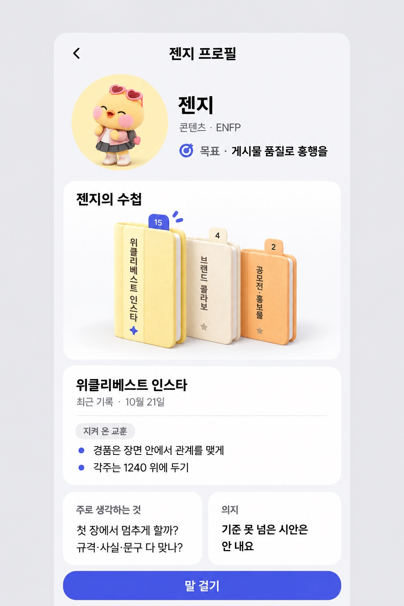
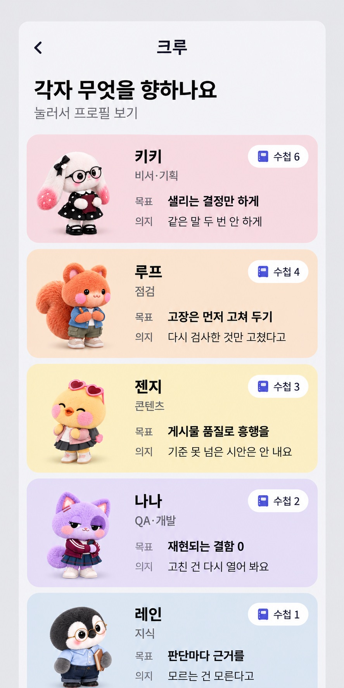

크루 프로필 · 목표와 수첩
크루마다 목표, 주로 생각하는 것, 의지, 가진 수첩을 한눈에 보이게 한 세 안이에요.
A 목표가 첫 화면
프로필을 열면 목표가 맨 위에 보이고, 생각·의지·수첩이 차례로 이어져요.

B 수첩 책장
수첩이 주인공이에요. 한 권을 고르면 최근 기록과 지켜 온 교훈이 아래에 열려요.

C 크루 다섯 한눈에
크루 목록에서 다섯 명의 목표·의지·수첩 수를 바로 비교해요. A나 B와 함께 쓸 수 있어요.
